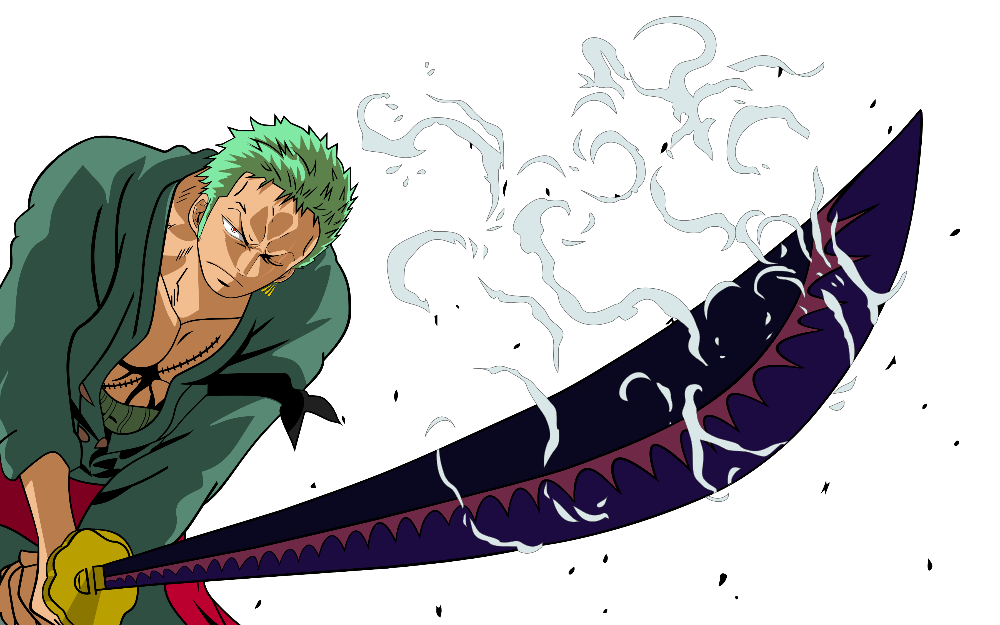

Luffy
Monkey D. Luffy, é um personagem fictício e o protagonista da franquia One Piece criada por Eiichiro Oda. Ele é apresentado como um jovem cujo corpo ganha as propriedades de borracha após ter comido a Gomu-Gomu no Mi, uma das várias frutas amaldiçoadas conhecidas como Akuma no Mi ou Frutas do Diabo.
Zoro
Roronoa Zoro, é um personagem fictício da série One Piece criada por Eiichiro Oda. Na história, Zoro era um caçador de piratas que por fim se torna um quando é convencido pelo protagonista Monkey D. Luffy a ser o primeiro membro de sua tripulação, os Piratas do Chapéu de Palha.
Sanji
Vinsmoke Sanji é um personagem criado por Eiichiro Oda para o seu mangá e anime One Piece. Ele é introduzido ainda na primeira saga da história como um cozinheiro do restaurante-navio Baratie e depois passa a trabalhar para o capitão Monkey D. Luffy no seu bando dos Piratas do Chapéu de Palha